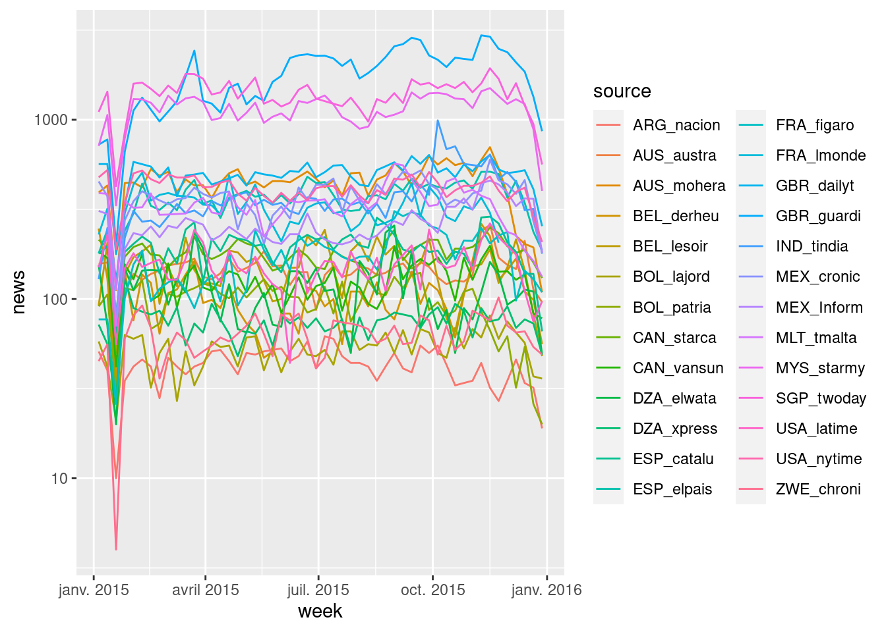

Chapter 5 Examples of corpora
## Package version: 2.0.1## Parallel computing: 2 of 11 threads used.## See https://quanteda.io for tutorials and examples.##
## Attaching package: 'quanteda'## The following object is masked from 'package:utils':
##
## View##
## Attaching package: 'dplyr'## The following objects are masked from 'package:stats':
##
## filter, lag## The following objects are masked from 'package:base':
##
## intersect, setdiff, setequal, union5.1 The Geomedia corpus
The Geomedia corpus is the result of the research project ANR Corpus Geomedia (2013-2016), coordinated by Claude Grasland (Université Paris Diderot) and Marta Severo (Univerté de Nanterre)
The project created a tool for the harvest of RSS flows that realized collection from daily newspapers located in all countries of the world. Contrary to Mediacloud, the Geomedia project did not collected together all the feed of a newspaper but proceed to a selection of specific topics, generally limited to the international/world flow and the general/breaking news flow. But the other flows related to sport, economy, culture, … was generaly ignored. The majority of studies realized during the project focused on the international feeds because they present the advantage to produce theoretically a selection of foreign news of interest for the host country where the media is located (ref.).
5.1.1 The socant corpus
The “socant” corpus is a specific extraction from the Geomedia database realized in order to prepare a publication about the Migrant crisi of 2015 in the french journal Socio-Anthropologie. We present here a version of the corpus after several steps of cleaning described in the publication :
## Corpus consisting of 491324 documents, showing 2 documents:
##
## Text Types Tokens Sentences id source date lang
## text1 21 21 1 4155294 AUS_austra 2015-01-01 00:00:37 en
## text2 26 26 1 4155295 AUS_austra 2015-01-01 00:00:37 en
## url
## http://feedproxy.google.com/~r/TheAustralianTheWorld/~3/LiIFByRSTI0/story-e6frg6so-1227171697881
## http://feedproxy.google.com/~r/TheAustralianTheWorld/~3/AtXKdPKuoY4/story-e6frg906-1227171718666
## title
## 35 feared dead in Shanghai NYE stampede
## Amazon chief Bezos loses $US7.4bn## Corpus consisting of 2 documents and 6 docvars.
## text1 :
## "CHINA'S state-run news agency is reporting that 35 people ha..."
##
## text2 :
## "AMAZON.com turned in its worst year on the market since 2008..."The corpus is based on the international RSS feed of 26 newspapers published in 3 languages (French, English, Spanish) and located in 16 countries.
tt<-tidy(qd)
lang<-tt %>%
group_by(lang) %>%
summarise(news=n()) %>%
mutate(pct = 100*news/sum(news))
kable(lang, digit=1)| lang | news | pct |
|---|---|---|
| en | 370260 | 75.4 |
| es | 73198 | 14.9 |
| fr | 47866 | 9.7 |
country<-tt %>%
mutate(country=substr(source,1,3))%>%
group_by(country) %>%
summarise(news=n()) %>%
mutate(pct = 100*news/sum(news))
kable(country, digit=1)| country | news | pct |
|---|---|---|
| ARG | 2247 | 0.5 |
| AUS | 31237 | 6.4 |
| BEL | 13664 | 2.8 |
| BOL | 7871 | 1.6 |
| CAN | 16306 | 3.3 |
| DZA | 9927 | 2.0 |
| ESP | 29539 | 6.0 |
| FRA | 24275 | 4.9 |
| GBR | 120120 | 24.4 |
| IND | 19455 | 4.0 |
| MEX | 33541 | 6.8 |
| MLT | 17696 | 3.6 |
| MYS | 59875 | 12.2 |
| SGP | 72361 | 14.7 |
| USA | 29877 | 6.1 |
| ZWE | 3333 | 0.7 |
Each of the source has produce different number of news through time but appears relatively regular during the period, with the exception of a short period of break of collection in January.
source_week<-tt %>%
mutate(week=cut(as.Date(date), "weeks"))%>%
group_by(source, week)%>%
summarise(news=n()) %>%
mutate(week = as.Date(week))%>%
filter(week > as.Date("2015-01-01"))%>%
filter(week < as.Date("2016-01-01"))
p<-ggplot(source_week, aes(x=week,y=news,color=source))+geom_line()+scale_y_log10()
p